I build institutional learning and operational systems.
I start with people, finding where the real friction is, then build systems designed to handle far more than the immediate problem. That thinking runs through everything I've done: learning infrastructure, compliance architecture, AI-enabled workflows.
Courses supported annually through institution-wide distance education systems.
Annual enrollments supported across academic programs and campuses.
Reduction in reporting and processing time through analytics infrastructure and workflow redesign.
Enrollment growth after redesigning and launching a fully online professional doctoral program.
Professionals represented through national AI competency framework design with the NCBAHM AI Taskforce.
The institution needed a distance education system that could scale across campuses, support a fully online professional doctoral program, and hold up under accreditation and state authorization requirements. I approached that challenge as an infrastructure problem rather than a course-by-course design task.
The school already had online delivery in place, but it was still largely organized around synchronous Zoom meetings rather than a unified distance education operating structure. At the same time, leadership wanted to grow a fully online professional doctoral program that could recruit nationally. That required more than course design. The institution needed a system that could support scale, faculty implementation, regulatory compliance, and accreditation alignment in a coordinated way.
After joining the institution, I helped move online delivery from a primarily synchronous, Zoom-based model into a more fully developed distance education system. That included distance education expectations, LMS engagement structures, recurring NC-SARA processes, compliance documentation, course-level quality review processes, faculty-facing guidance, and broader use of flipped, hybrid, asynchronous, and activity-based learning models.
I then redesigned the doctoral pathway inside that structure. I conducted market review, defined four clinical focus areas, aligned program objectives with ACAHM competency domains, mapped course-level outcomes, and designed learning models that could support academic quality in a fully online format.
To make the system more durable, I also structured the competency mapping as a normalized JSON database. That created a reusable data layer for accreditation reporting and made future revision work more manageable.
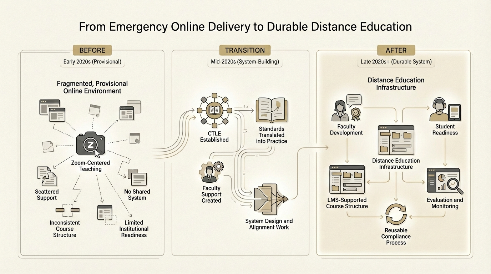
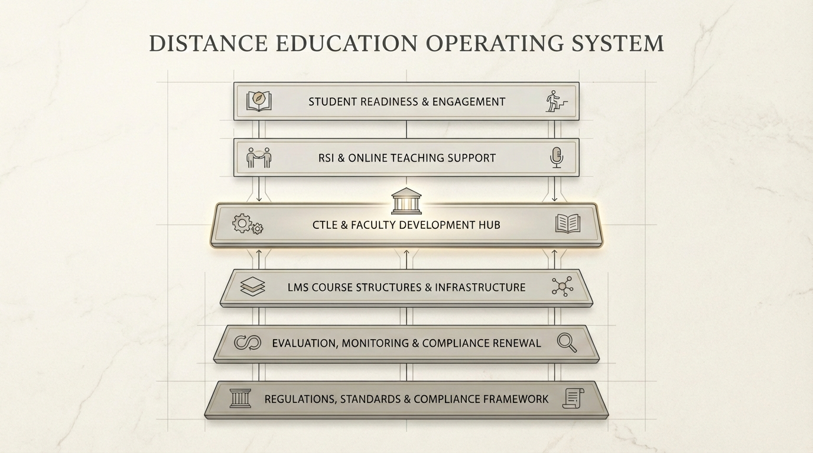
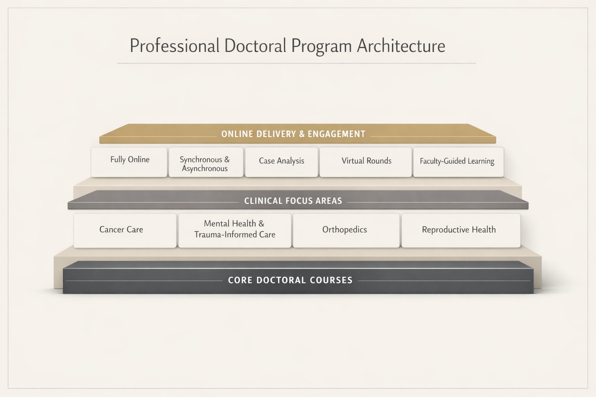
The resulting infrastructure now supports more than 600 courses and more than 2,000 annual course enrollments across three campuses. The online doctoral program grew from fewer than 20 students per term to more than 60 after launch. Just as important, the school gained a reusable distance education and compliance structure that could support future growth beyond a single program. That curriculum database later became the foundation for a larger accreditation response project described below (Case Study 04).
I led the system design, program architecture, and compliance structure. Enrollment growth also depended on admissions effort, leadership support, and institutional follow-through. My main contribution was building the underlying structure that made scaling possible.
The institution had large amounts of academic and clinical data, but very little of it was organized for decision-making. I approached that gap as an infrastructure problem and built the reporting systems, workflows, and dashboards needed to make the data usable.
Basic questions about academic performance, clinic activity, board outcomes, and program trends were difficult to answer because the institution did not yet have an organized analytics structure. Data existed across multiple systems, but it was not being transformed into information people could reliably use for planning, review, or decision-making.
I established the reporting structure from scratch and taught myself the tools required to make it work. That included Power BI dashboards, clinic data workflows, board exam tracking, and other reporting pipelines that translated scattered records into usable views for academic and operational review.
I also developed local and privacy-aware workflows when cloud tools were not the best fit because of cost, practicality, or data sensitivity. The goal was to build a reporting environment that the institution could reuse over time.


Dashboard screenshots from production environment. Data anonymized for confidentiality.
The institution now has a working analytics environment for academic and clinical reporting, with dashboards and recurring reports that support planning and decision-making. Processing and reporting time dropped by 95 percent. What once took days of manual work now takes hours, with far greater visibility and consistency.
I did not come into this role as a formal data specialist. The work grew from a practical institutional need to make teaching, learning, and operations more visible and more manageable.
AI was already affecting classroom practice, student workflow, and faculty judgment, but the institution did not yet have a shared way to respond. I approached that situation as a capability-building problem. The goal was to help the school develop practical judgment, clearer guidance, and room for responsible experimentation.
As generative AI spread quickly, faculty needed practical guidance, students needed a way to build judgment, and the institution needed a shared language for responsible use. A policy alone would not solve that. The real issue was how to help people think clearly, work responsibly, and use the technology without letting it replace learning.
I built the response across several connected layers.
At the governance level, I helped shape institutional guidance so faculty had a usable starting point for classroom decisions. The aim was to give the school a practical framework for responsible use rather than leaving people with vague concern or informal guesswork.
At the faculty level, I developed support structures around AI use in teaching and course design. That included practical conversations, examples, and training that helped faculty work through real questions instead of abstract hype. I also founded the VUIM AI Lab as a voluntary, peer-led space for shared experimentation. It gave faculty and staff a low-pressure way to compare use cases, test ideas, and build practical confidence without treating AI as a one-size-fits-all solution.
At the student level, I designed a 10-week AI literacy course built around critical evaluation, red-team testing, prompt design, ethics, and workflow thinking. I wanted students to learn how to question AI outputs, test limits, and make decisions with more care. The course treated AI literacy as a judgment problem, not a software tutorial.
At the experimentation level, I built early tools and workflows that let us explore AI in concrete ways. These included course-specific chatbot support, an intake interview simulator for clinical training, and privacy-aware local transcription workflows. Each one addressed a real instructional or operational need and helped clarify where AI was useful, where it needed constraints, and where human review had to remain central.
This work also extended beyond the institution. Through national AI competency framework work, I contributed to broader conversations about responsible AI use in healthcare education and professional practice.
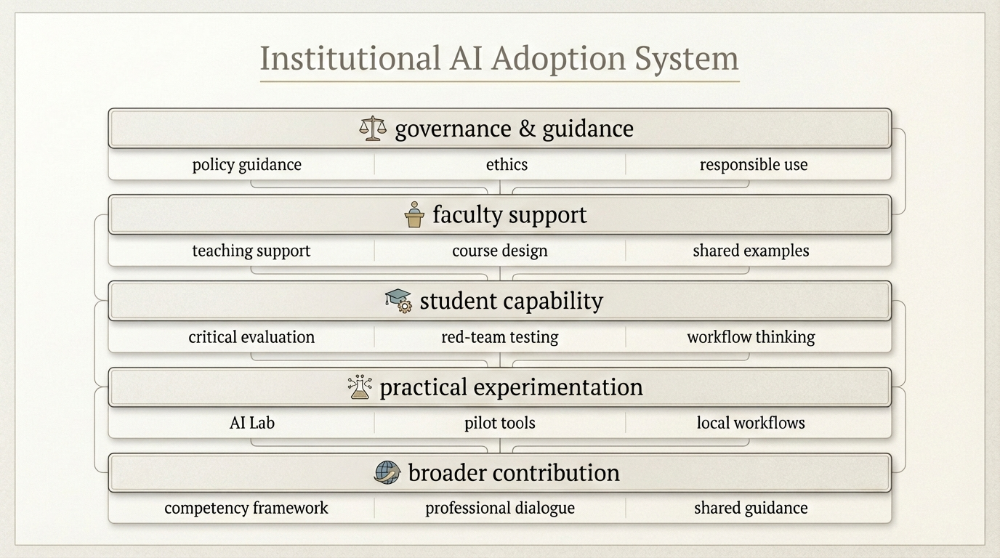
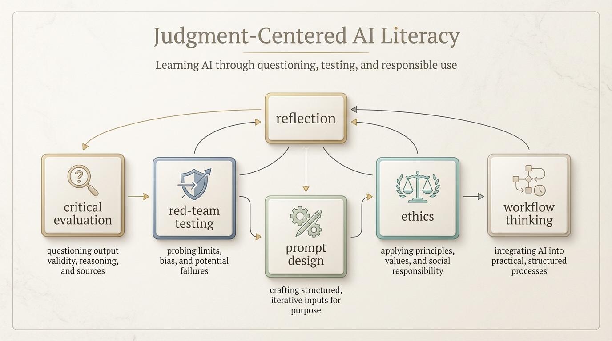
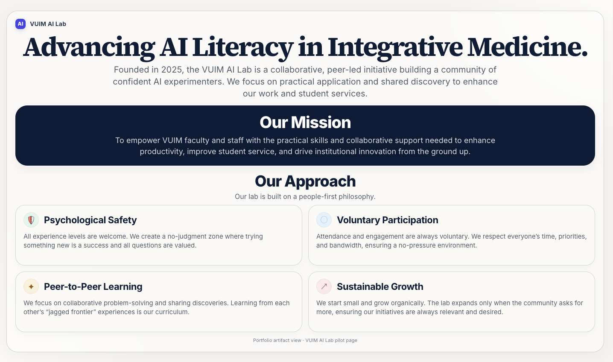
The institution gained a more coherent way to respond to AI across governance, faculty practice, student learning, and early experimentation. Faculty had clearer starting points. Students had a more structured way to develop judgment. Internal experimentation became more purposeful. The work also connected local practice to broader professional framework development beyond the institution.
Some of the tools remained early prototypes, and adoption did not move at the same pace across every part of the institution. The main contribution was building a coherent response early, before AI use became fully normalized and harder to guide well.
Our accreditor replaced its entire competency framework with a new six-domain structure. We had four degree programs to remap and weeks to do it. I treated it as a data architecture problem and ran the project as a structured multi-session AI collaboration.
The old framework used a three-domain structure with numbered sub-competencies. The new one introduced six domains with a flat code system. No crosswalk was provided. Each program needed its own complete competency map. Several new competencies had no clear match in our existing curriculum, meaning we had real gaps to find and address before the Self-Study Report submission.
Before this project, curriculum data lived in scattered spreadsheets and documents. Updating a single competency mapping meant touching multiple files by hand, and consistency across programs was hard to maintain.
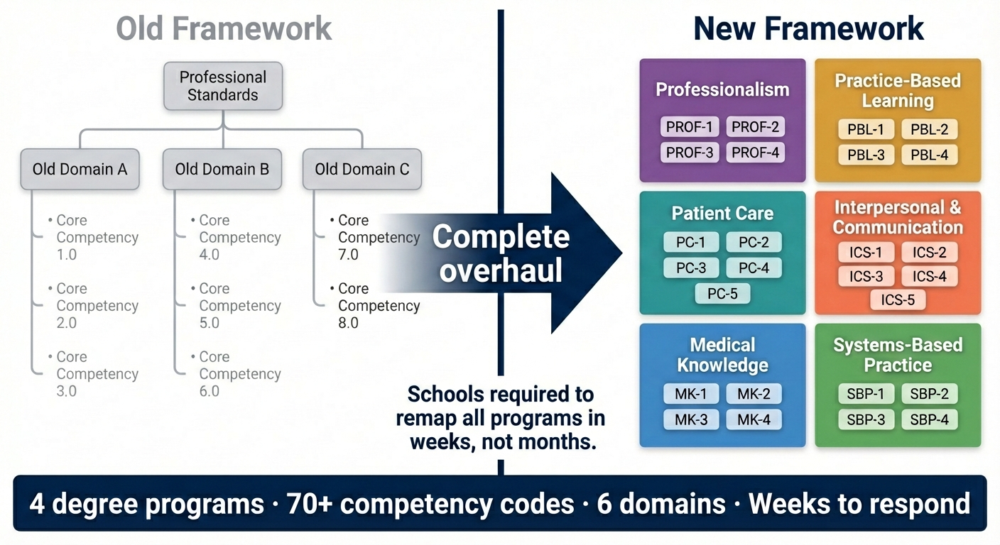
A single long AI conversation was not the right tool for this. Context fills up, the model loses track of decisions, and quality drifts. I structured the project across distinct session types: a coordinator session for strategy and gap analysis, data-building sessions for JSON construction, Claude Code sessions for CLO extraction and app deployment, and update sessions for post-committee revisions.
Each session started with a handoff document: a markdown file that gave the model the full project state, prior decisions, file locations, and the specific task ahead. Writing handoffs is itself useful. It forces you to articulate what you know and what's still uncertain. Continuity across sessions was designed, not assumed.
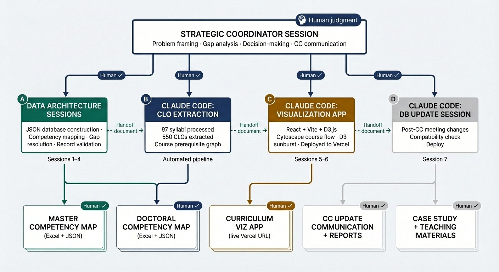
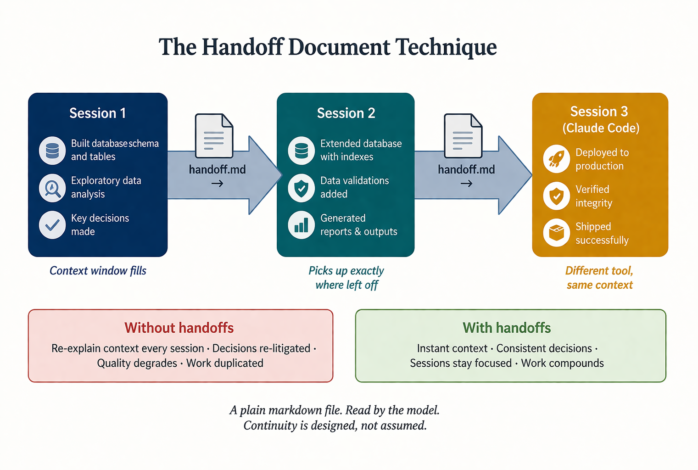
The foundation was a normalized JSON database in three layers: a master's competency map (133 records), a doctoral competency map (144 records), and a course graph (96 courses, 550 CLOs, 186 prerequisite edges). All three connect through course codes as join keys. One source of truth. Update the database, and every downstream output updates with it.
I used Claude Code to extract CLOs from 97 syllabus files, classifying each by Bloom's taxonomy level and assessment method.
On top of the database, I built an interactive React app with two views: a Cytoscape.js prerequisite flow graph (dagre layout, department color-coded) and a D3.js competency sunburst. Clicking any course node shows its mapped competencies, prerequisites, and CLOs. The Curriculum Committee used the tool during review. Admissions, student support, and administration now reference it as well.
After the committee reviewed the initial mapping, I compiled their feedback into a structured update session that resolved six coverage gaps, corrected program-specific course assignments, caught a data type bug, and regenerated all output files in about two hours.
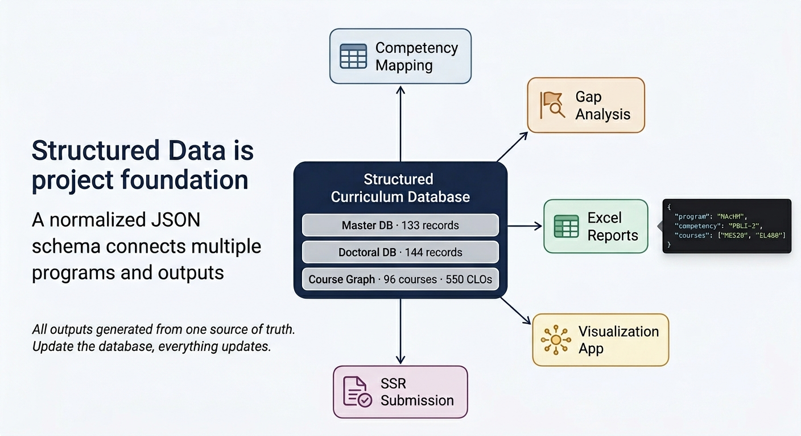

The project compressed weeks of spreadsheet work into days. But the bigger change was structural. The committee could see coverage density, identify gaps visually, and make targeted decisions instead of working through flat tables row by row. The database is reusable and future-proof: when standards change again, the remapping starts from structured data with clear logic, not from scattered files and institutional memory.
Human subject matter experts made the curriculum decisions. What AI compressed was the mechanical work: data construction, crosswalk logic, document generation. That compression created space for the discussions that actually required people.
Built and managed faculty support structures across three campuses, including onboarding, asynchronous training, internal newsletters, and practical teaching support.
Created a growing set of internal resources covering online learning readiness, faculty essentials, board exam preparation, AI literacy, and academic integrity. The goal was to make teaching support more usable, more consistent, and easier to sustain over time.
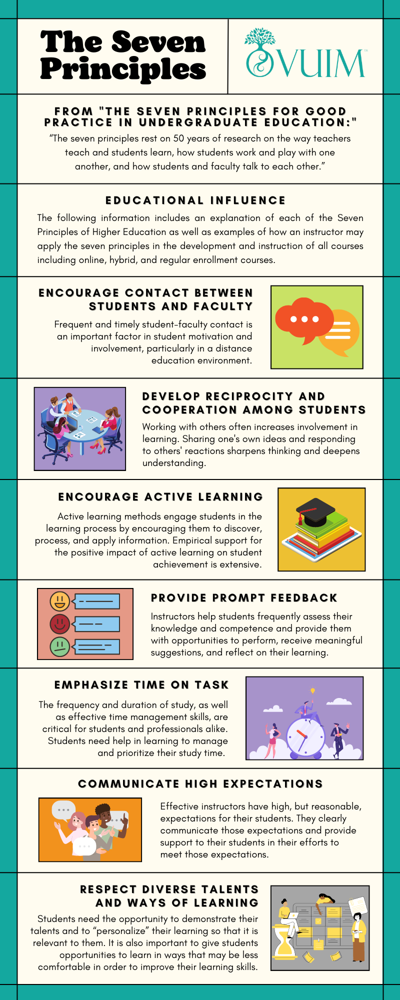


Designed and implemented safety and readiness training for staff and clinical interns, including workflows, guidance, and learning materials that supported more consistent practice in clinical settings.
More than 110 employees completed institutional safety training, and more than 300 interns participate in clinic readiness training each quarter. Loose needle incidents dropped to zero after implementation of the redesigned safety training sequence.


Designed low-cost workflows that connected intake, automation, AI summarization, and structured archiving across tools such as Notion and Google Drive.
Also developed early internal prototypes, including an AI-powered curriculum map concept that helped students visualize program pathways and next-step options more clearly.


Built a workflow using Whisper, ChatGPT, and NotebookLM to support asynchronous course development from recorded lectures and existing instructional materials.
Faculty review and subject matter expert verification remained part of the process throughout, helping preserve accuracy, instructional quality, and practical usefulness.

Built and deployed a bilingual (Korean/English) interactive narrative web app that uses the Claude API to generate sensory, choice-driven walking experiences. Users move through five nature ambiences while the app generates narration, manages scene transitions, and produces a reflective diary entry at the end.
Built as a single-file vanilla HTML/JS app with direct Claude API integration, structured prompts, response parsing, audio crossfade, and a full i18n layer for language switching. I designed the prompt and guardrail logic to keep outputs structured enough for reliable scene control while preserving narrative quality.
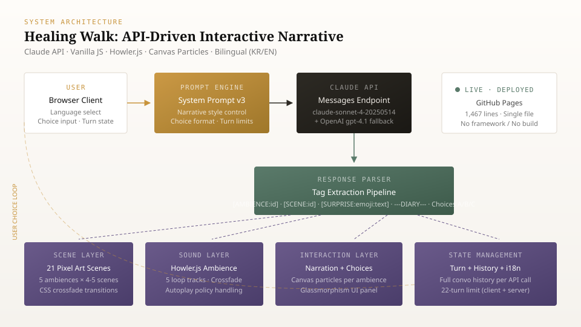
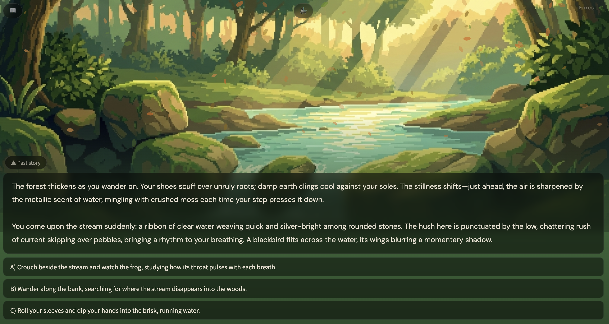
Used Claude Code to extract textbook data from 444 syllabus files, deduplicate entries across inconsistent citation styles, and cross-reference the results against board exam content outlines. The final output was a master spreadsheet with titles, authors, ISBNs, source syllabi, and relevance flags.
Claude Code planned the workflow, wrote and executed Python scripts, parsed .docx files, and iterated through multiple deduplication strategies as edge cases appeared. After four rounds of refinement, the process produced accurate results in about 30 minutes, compared with an estimated two weeks of manual work.
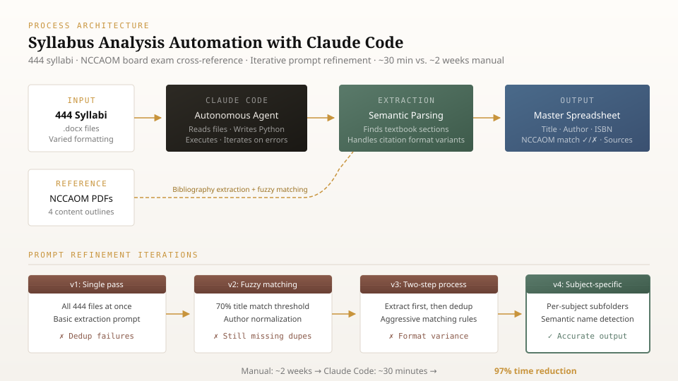
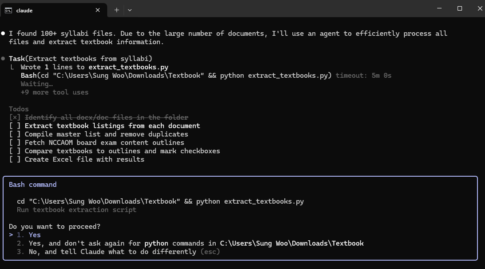
I pay close attention to the difference between productive effort and avoidable friction. Good learning often requires challenge, repetition, uncertainty, and real cognitive work. I do not try to remove that.
What I try to remove is the friction that does not help. Unclear instructions, weak course structure, scattered information, clumsy workflows, and poorly designed handoffs can drain time and energy without improving learning or performance.
This idea shapes how I design courses, support faculty, structure training, and build systems. The goal is to make room for the effort that matters.
I do not assume that every problem needs a technical answer. Some problems are structural. Some are instructional. Some come from policy, culture, or coordination gaps. The tool only helps once the real problem is clear.
That usually means slowing down at the beginning, asking what is actually breaking down, and choosing a response that fits the situation rather than forcing a preferred solution.
I prefer systems that keep helping after the first implementation. That can mean reusable templates, clearer logic, better documentation, stronger training, or workflows that other people can actually sustain.
The goal is not only to solve the immediate problem. It is to leave the organization better able to handle similar problems the next time.
Institutional systems design, program architecture, compliance-aware implementation, operational problem framing, cross-functional workflow design, and change support across learning and administrative contexts.
Curriculum design, asynchronous and hybrid learning models, assessment alignment, faculty development, learner support design, simulation-based learning, and subject matter expert collaboration.
Responsible AI adoption, workflow design, prompt-based systems, API integration, Claude Code automation, Power BI reporting, Python-based data work, privacy-aware experimentation, and practical automation for institutional use.
I look for the real point of strain, define the actual problem, and build structures that help people and organizations move forward with more clarity.